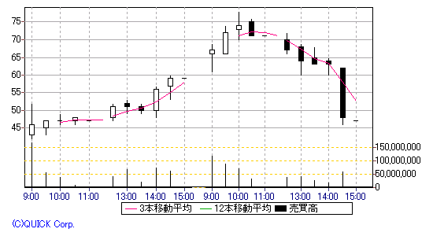
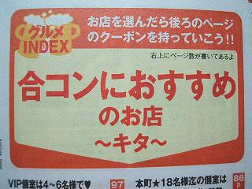
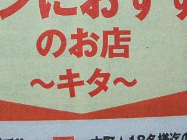
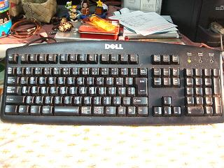
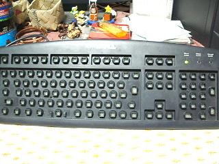
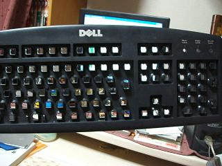
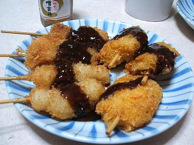
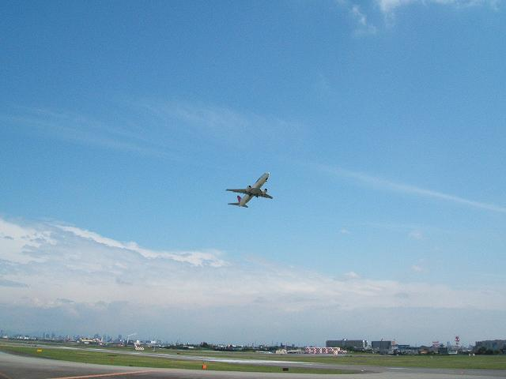
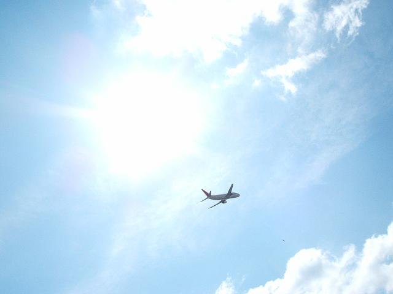
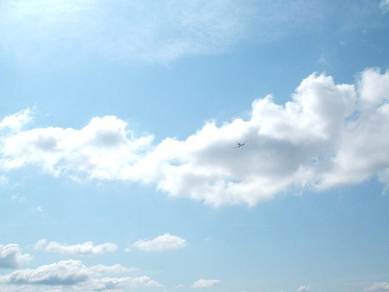

日々、想ふ
〜過去感じたことがつれづれと〜
（できるだけ最大化してお読みください）
日々、想ふ
月末大勝負〜リアルマネーゲーム〜。６/３０
今日は月末で、塾のバイトで給料をもらってきました。
給料袋を見て思ったんだけどこのバイト来月から３年目がスタート、
もうひとつのバイトも１年半強、けっこう続くもんですね。
でも今日はそんな感傷に浸ってる余裕なんか全然ありません。
この（給料）＝（今月の株取引の負け分）なんていうのは
認めがたい事実ですが、タケユキです。
というのも今日勝負に出なければ諭吉一人とお別れするだけで
来月再出発と、なんとかなったのに
今日のＳサイエンスっていう低位株(株単価が安い)に勝負出たら、大暴落。
あの値動きは今日何人が樹海行きを人間を作ってる、間違いない。
今日のＳサイエンス日中足チャート：俺は70円で買って61円で損切りした。

やっぱり梅雨なんじゃねえか。６/２９
今日の降水確率は３０％だったのに
大阪は昼ごろにバケツひっくり返したみたいに
アホみたいな豪雨になりました、
そしてそんな時に限ってバイクを運転してる俺がいました、タケユキです。
どこかに停まろうと思うも雨に見舞われたのは
中央環状線から新御堂へと入るあたり、
新御堂は一つも信号がない半高速道路、
雨＆水しぶきがすごくて１０メートル先も見えない極限状態。
車に乗ってて前が見えないのとバイクに乗ってて前が見えないのだと
恐怖感がまるで違う、超こええ、てか超寒かった。
結局梅田に行くのはあきらめて
びっしょ濡れのまま緑地公園あたりでＵターン、
家に帰って着替えて再度外出したら傘を一度も使うことなく
雨の峠は越えてた今日一日の俺はおそらく負け組。
今日の映画：「宇宙戦争」見ましたよ。
居酒屋クーポンッ♪。６/２８
そりゃあんな顔した稲森いずみにお願いされたら
誰だってはいと言ってしまうわけですよ、タケユキです。
今日は大学には珍しいテストの返却があったり
通帳の記帳をしたら残高が４０００円を切ってたり、
スーパーで久しぶりに三ツ矢サイダーを買ったりした。
あと家帰ってからは最近ハマってるホットペッパーのCMを何回も見てた。
これの一番上にあるやつ。
うろたえっぷりがたまりません。
今日の三ツ矢サイダー：久しぶりに飲んだ。
「電車男」の影響ですかね。６/２７
鼻をかむのに使うものとして
ティッシュペーパーとトイレットペーパーがあります。
知ってのとおりトイレットペーパーは
ティッシュペーパーと比べてキメが粗いというか硬いというか
でもティッシュペーパーは主として鼻周りを拭くもの、
トイレットペーパーは主としておしりの穴を拭くもの、
どう考えても鼻周りよりお尻の穴の方が敏感であるのに、
デリケートであるはずなのに、
それなのに生地(生地？)が粗い紙であるトイレットペーパーで拭かせるのですか？
トイレットペーパーをもっとやわらかい材質に
変更すべきであることを強く、強く主張します。
鼻水がまだ止まらずに手持ちのティッシュペーパーを切らして
トイレに鼻かみに行ったところ
鼻周りが微妙にヒリヒリするようになりました、
なにごともやわらかいにこしたことはないと思います、タケユキです。
今日ホットペッパーを授業中に学校で読んでました。
梅田で手に入れたホットペッパーは掲載されてる地域が
梅田周辺(キタ)と心斎橋・なんば(ミナミ)と大きく二つに分けて掲載されています。
その中にも「居酒屋」「ダイニングバー」とかジャンルで分けてあって、
今月号には他にも「食事メインのお店」とか特集されてた。
なかでも下の特集を見てたら横にいた友達が

「すごいなあこの特集」
「なんで？」
「だって合コンしやすいお店の上にキターーってまで書いてあるじゃん」

・・このキタはそのキタじゃないですよ？
今日のキタ：こんなやつ↓
キタ━━━(゜∀゜)━━( ゜∀)━━( )━━(∀゜ )━━(゜∀゜)━━━!!
おおもとはというと。６/２６
今日は梅田行って、帰りに南海部品(バイク用品店)の
梅田本店に行ってヘルメットを買ってきました。
これでうちにはヘルメットが計４つ。
気分によって使うメットを換えてでもいくつもりなんですかね、
無駄に集める癖はどうしたもんですかね、タケユキです。
昨日からダイヤモンドシティでサマーバーゲンが始まってたんで
梅田から一路伊丹へ。
つい最近JR福知山線が復旧したんで
伊丹駅を利用してきてたお客さんと
（ダイヤモンドシティとJR伊丹駅はつながってる）
日曜日ってことも重なって人の多いこと多いこと。
それにしてもまだ６月の梅雨も明けてないのにサマーバーゲンて。
電車が使えなくてこれなくなってたお客を
またこっちに取り戻すための作戦なんだろうなと
ちょっと複雑な気分。
それでもお金ないときに３０％、４０％オフのセールはうれしいもんで。
買い物終わってからは食品コーナーでおやつの時間。
メニューはウインナーとベーコン。
試食とも言う。
それから夜は最近多い揚げ物主体の晩ご飯。
昨日ホットペッパー７月号を手に入れたから
パラパラ見ながら食べる。
どう見ても晩飯よりホットペッパーに載ってる料理の方がうまそう。
外食したい、けどお金ない。
今週こそは株、がんばる。
今日の決意：今貧乏なのは先週株で負けたせい。
だんだん短くなっていく。６/２５
今日は梅田でバイトしかしてませんよ、タケユキです。
６月ということもあって結婚式の二次会ってのが
結構な割合で予約が入ってるんだけど、
今日は二次会の予約が６本。
労働時間が１２時間半。
帰宅が０時過ぎ。
・・寝ます。
今日の日記：もうほんと形だけの更新。
週末だからか。６/２４
疲れてるんで寝ます、タケユキでした。
今日の日記：形だけの更新。
叩きのめされる。６/２３
そういえば火曜日にやってるドラマ「曲がり角の彼女」、
来週で最終回なんだけどエンディング辺りのその回の山場に流れる曲
「言葉にできない」は小田和正だと思ってました、
違うみたいですね、声そっくりじゃん、タケユキです。
今日は、というか毎週木曜日は塾講のバイトです。
高３の数学(といっても教えるのは数ⅠＡとⅡＢ)を見てるんだけど
今日もいつもの通り授業見て、いつもの通りおちょくられて
時間になったしさあ終わろうかと終わったんだけど
終わったあとにちょっと話をしてたら
勉強なんかいややって話になって、いろいろ不満聞いてたら
一人の女の子がいきなり泣き出した。
「勉強してまでいい大学なんか行きたくないねん！！」
誰でもそうだろうけど勉強が嫌いっていうストレスと
親と受験のことでもめるとか、いろんなストレスが溜まってたみたい。
俺は塾では先生という立場ではあるけども
生徒とそんなに年が離れてないわけで、
最近(っていうのは言い過ぎかもしれないけど)大学受験を経験した
立場として
その子の支えになるような話をしてあげられる人間だったのに、
仮にもそこでは先生なわけなんだし。
それなのに納得がいくような、
自分から勉強がんばろうって思えるような気持ちになれるよう
諭してあげられるような話なんて到底できなかった。
「でも一生で一番勉強せないかんときやしなあ、高３ってのは」
「そんな話は聞き飽きてん」
今年に入ってそういう人の支えになるべき局面に
出くわすことがけっこうあるような気がするけど、
その度に無力感に打ちひしがれる。俺もまだまだまだまだ。
人の心を動かすっていうのは、ほんと難しい。
これは恋愛に関しても言えること。
今日のバイト：俺が泣きたくなった。
今日も雨は降りませんでした。６/２２
今日は１限から英語の授業の日。
この授業ではABCニュースの放送を題材に使った教科書を使ってるんだけど
今日の内容は同性婚についてって話でした。
大多数が普通っていう見方をしなければ、
考え方によっては異性を好きなのが普通なのか、
同性を好きなのを普通というのかは一概には言えないとか。
俺は女の子(特にかわいい)が好きなわけだけど
共感はできないけどそういう考え方もありなんかなぁと。
と、隣に座ってる友達が俺の足をポンとたたいて
俺を見つめながら意味ありげにうなずく。
イヤイヤイヤイヤイヤイヤ、
あくまで理解はできますが共感はできません、タケユキです。
まだ鼻水が止まりません、右だけ。
今日の食後のデザート：冷凍ライチ。
右だけ止まらない。６/２１
今日学校の帰りにフレンドリー前の交差点で
エンストしてるSR(バイク)を見ました、
N田でした。
キック始動のバイクで交差点のエンストは致命的でしょ、タケユキです。
鼻水が右だけ止まりません、
今日薄着で学校行ったからか。
今日の夜：微妙に呼吸困難。
短い労働。６/２０
学校終わって即効バイトだったんですよ、タケユキです。
俺のやってるバイトは平日は基本的に午後５時からスタートです。
それでも予定があったりとかする場合は
５時半からとか６時からとかでもオッケーだったりします。
と言っても学校が忙しかったり用事があったりで
最近俺は土日しかバイトに入らないようにしてもらってたんだけど
たまに平日に人が足りない時とかにバイトに入ったりします。
お店の人も俺が平日入るのはキツイって分かってくれてて
お店のピークが過ぎて落ち着いてきたら
ある程度早めにあがらせてもらったりしてもらってます。
そうやって気を使ってもらえるのはうれしいんだけど
今日みたいな７時にバイト入って思ったより忙しくなかったから
８時にあがらせてもらうってのはどうなんだろう。
働きに行ったというよりはまかないの晩ご飯食べに行ったようなもん。
今日の実験：まったく進まず。
気分新たに。６/１９
腹へった・・、米が炊けるまであと３０分、タケユキです。
今日は昼からバイトだったんだけど、
始まったのが早かった分終わるのも早くて午後五時には
帰路につくことができました。
日曜日の夕方から自由な時間があるってのは
けっこうひさしぶりなんもんで
なにを血迷ったかその空き時間をキーボードの掃除にあててしまいました。
掃除始める前のキーボード
キーボードの掃除って言ってピンとくる人はあんまりいないと思うけど
要するにこんな感じです。
キートップ(ボタン)を全て抜いたキーボード
それからキートップとこの基盤を洗剤つけて水洗い＆陰干し。
軽く拭いて干したら１時間もせずに乾いてた。

キーボードの穴から向こうが見えるってのはかなり違和感。
乾いたのを確認したらキートップをつけていく、
つけていくわけだけどキートップの配置を何も見ずに
埋めていくことができる自分がなんか微妙な気分。
「X」はここで「C」はその隣だよな、とか。
とまあ無事に掃除も終わり明日から一週間がんばります。
今日の天気：梅雨なのにこんないい天気でいいの？
一度に５つくらいまでが限界。６/１８
今ふと考えると今日は一食しか食べていません、タケユキです。
バイト先の結婚式の二次会会場で料理を配ってる時のこと、
「すいませーん、カシスオレンジ２つ」
「あ、モスコミュールで」
「焼酎水割りで」
「オレンジジュースください」
料理配ってる最中で両手ふさがってて頭で覚えるしかないこの状況、
このバイトを始めて１年と８ヶ月、このくらいの注文なら
頭で覚えて処理するなんてもう楽勝楽勝。
俺もできる男になったなぁと思って料理配り続けてると
違うテーブルからお客さんの声、
「すいませーん、ジント」
近くにいたバイトの後輩に俺の代わりに注文聞きに行けのアイコンタクト、
危ない危ない、もう少しで注文忘れるとこだった。
今日の日記：「モスコミュール」って打って変換しようとしたら
最初に「モス子ミュール」って変換された、
ミュールの文字でそういや夏ももう近いんだよなぁと思いつつ
モス子って誰だよと思いながら更新する深夜０時。
デートする芸能人で見たい度が１８０度変わりますよね。６/１７
今日学校が終わって帰ろうとしたら基礎工棟の入り口あたりで
チャリを５，６台倒してる人がいました。
変わった趣味を持った人っているもんですね、
そんなに楽しいものなんだろうか、タケユキです。
今日はそんなちょっとおもしろいものを見れたり
テストがひとつ終わったんで気分転換にでもと
晩ご飯をいつもとは違うものにしてみました。
串カツセット
もちろん自分で揚げましたよ、冷凍食品ですけど。
一週間も今日で一区切りといい気分で晩ご飯食べてたんだけど
恋するハニカミに出てきたのが小池栄子だったのでテンションはズーン。
今日の個人的希望：宮崎あおいとか相武紗季とかが見たい。
飛びたて、飛行機。６/１６



学校終わってバイトまで暇だったんで
いい天気だし伊丹空港近くの公園でひなたぼっこしてましたよ、
最近ここで時間を過ごすのがお気に入り、タケユキでした。